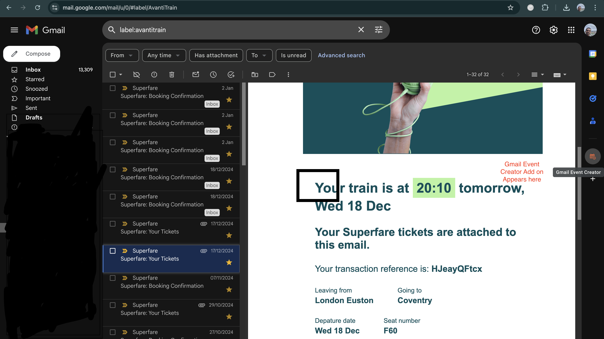
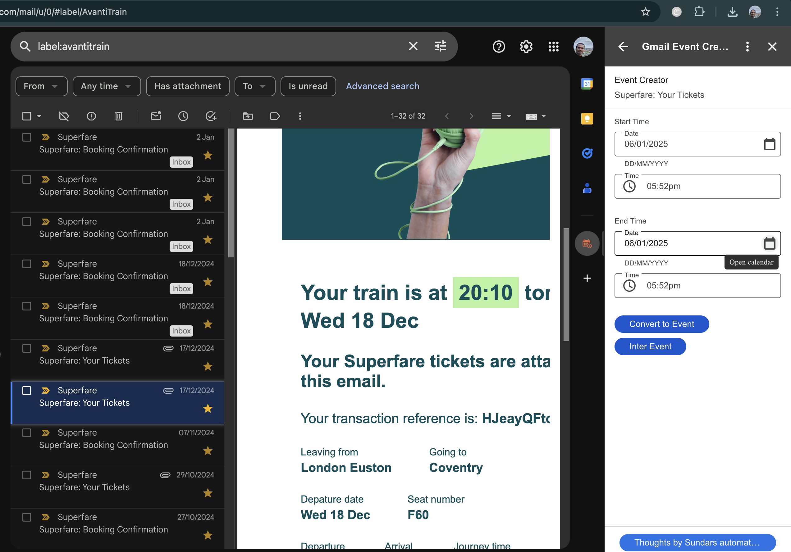
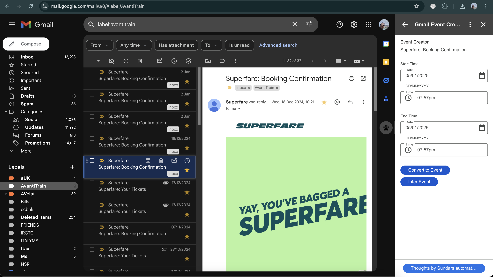

Sundara automations
Event Creator Add on for Gmail
This Event Creator for Gmail add on helps the gmail users to select an email and create an event in your Google calendar from the Email Subject and Body,
through the Add on screen, without leaving the Gmail window.
- After the Add on is added from marketplace, the Orange calendar icon in the right panel of your Gmail
- 
- Select the Orange calendar icon in the right panel, The Add on loads with the home page as below
- 
- Select any email in the email panel on the left
- you will see that the add-on view refreshes with the Subject of the email title
It also shows a DateTime picker for Event start date and Event End date.
- 
- Select the Appropriate Date and Time of the Event
Click on Convert to Event.
- Thats it !!!.. within 2 seconds, the event is created in your calendar now, without leaving the Gmail window.
Hope you love this add on.
thanks
Privacy Policy